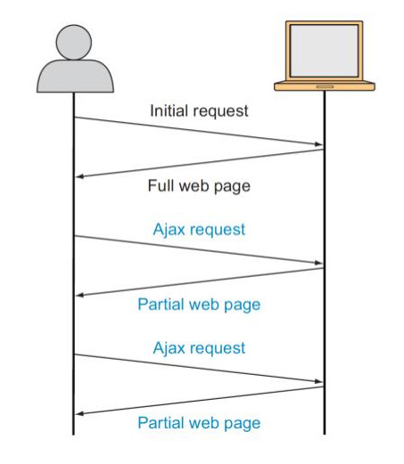
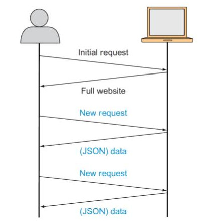

Introduction to

 Agenda
Agenda
- Introduction to Ember & Single Page Applications
- Ember project structure
- Advanced Topics & Bonus content
Part-I
What is Ember?
MVC Javascript Framework
Ember vs Other JS frameworks
React => Library for creating components
Vue => The Progressive Javascript Framework
Frameworks vs Libraries
A framework calls your code. Your code calls a library.
So Ember.js is a Framework
and React is a Library
Ember == Angular
Why Ember?
Ruby on Rails
Strong conventions
Developer Productivity
SPA
Single Page Application
AJAX
SPA
Components of SPA
- Routing
- State management
- API & Data
- Templating
- Styling
Routing
Routing in the browser
Client-side Routing
Client-side routing
- Hash-based routing
- URL-based routing
Hash-based routing
https://support.freshdesk.com/#tickets
https://support.freshdesk.com/#contacts
Fragment Identifiers
Part of the URL beginning with and following the # symbol
URL = http://google.com#cool-feature
Fragment Id = #cool-feature
Downsides of Hash-based routing

- Older Browsers
- Doesn't play well with Server side
- Small client-side only apps with no Backend
- Search Engine Indexing & SEO
- Server Side Rendering
URL-based routing
https://support.freshdesk.com/tickets
https://support.freshdesk.com/contacts
History API
Manipulate the user's browsing history
window.history
| back() | Goes to the previous page in the history. |
| forward() | Goes to the next page in the history. |
| go(index) | Goes to a specific page in the history. |
| pushState(state, title, URL) | Pushes the data in the history stack and navigate to the provided URL. |
| replaceState(state, title, URL) | Replaces the most recent data in the history stack and navigates to the provided URL. |
Routing in Ember
// Hash based routing
ENV.locationType = "hash";
// URL based routing
ENV.locationType = "history";
Automatic routing
// Modern Browsers => History API
// Older Browsers => Hash based routing
ENV.locationType = "auto";
State management
Internal State
External State
Internal State
State within the context of a single component
- Computed Properties
- Tracked Properties
Computed Properties
import EmberObject, { computed } from '@ember/object';
const Image = EmberObject.extend({
aspectRatio: computed('width', 'height', function() {
return this.width / this.height;
}),
});
Tracked Properties
import { tracked } from '@glimmer/tracking';
class Image {
@tracked width;
@tracked height;
get aspectRatio() {
return this.width / this.height;
}
}
External State
State within the context of whole application
involving multiple components
In React, we use Redux, MobX
In Ember, we use Services, Utils, Mixins along with Ember Data
API & Data
Ember Data
a powerful set of tools for formatting requests, normalizing responses, and efficiently managing a local cache of data.
Ember works with any type of backend
Models
import Model, { attr } from '@ember-data/model';
export default class PersonModel extends Model {
@attr('string') name;
@attr('date') birthday;
}
Relationships
import Model, { hasMany } from '@ember-data/model';
export default class OrderModel extends Model {
@hasMany('line-item') lineItems;
}
import Model, { belongsTo } from '@ember-data/model';
export default class LineItemModel extends Model {
@belongsTo('order') order;
}
Store
Single Source of Truth
- the central repository of models in your application.
- Routes and their corresponding controllers can ask the store for models, and the store is responsible for knowing how to fetch them
Records
an instance of a model that contains data loaded from a server.
this.store.findRecord('person', 1);
// => { id: 1, name: 'tony-stark' }
Finding a record

Finding a record (response)

Peek record

Templating
Dynamic value interpolation in your HTML
HTMLBars
Based on the Handlebars templating language
Template helpers
Helper functions are JavaScript functions that you can call from your template.
Given Name: {{capitalize this.person.givenName}}
Family Name: {{capitalize this.person.familyName}}
{{yield}}
denotes an area of a template that will be rendered inside of another template.
{{outlet}}
lets you specify where a child route will render in your template.
Styling
CSS
CSS Precompilers
- Sass
- LESS
- PostCss
Build Pipeline
Module Bundlers
Part-II
Creating Ember projects
Official CLI for creating & managing Ember.js apps
npm install --global ember-cli
ember new
ember new [project-name]
ember new my-project
ember new my-project --yarn
Package Managers
Skip npm install
ember new my-project --skip-npm
Skip git init
ember new my-project --skip-git
More options
ember help
ember help new
Part-III
How do I distribute reusable code with Ember?
Ember Addons
Ember Addons
Ember CLI provides a common format called Ember Addons for distributing reusable libraries.
Addons are JavaScript packages that integrate with Ember.
ember install ember-cli-sass
Generating new Ember addon
ember addon [addon-name]
Addon structure
Ember Observer
One place to find awesome ember addons
Zero config import from npm packages
ember-new-output
To quickly setup up projects with different Ember versions
degit ember-cli/ember-new-output#v2.18 [project-name]
Code splitting
Performance
Shipping unused code in the browser
Ember Engines
Composable applications for ambitious user experiences.
Engines are just glorified Ember addons
- Isolation
- Routable vs Routeless
- Lazy loading